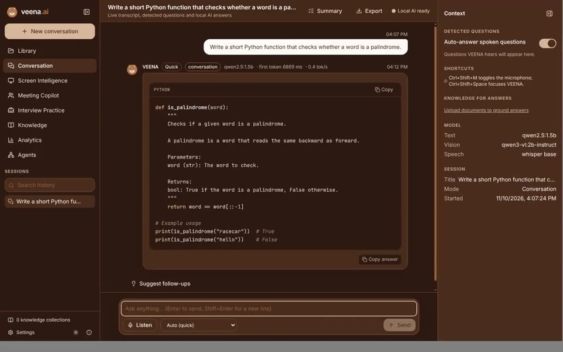
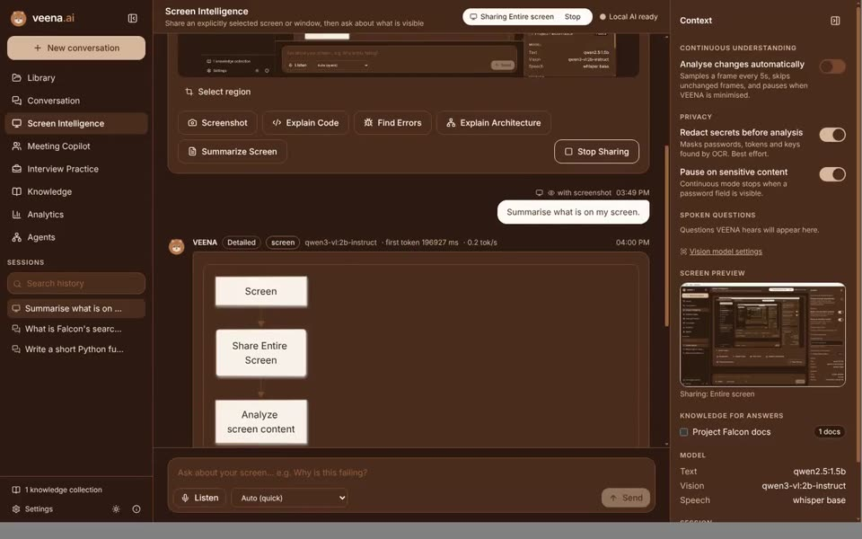
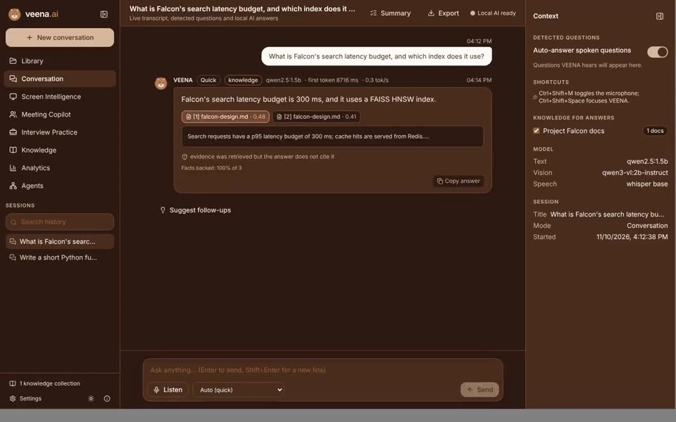
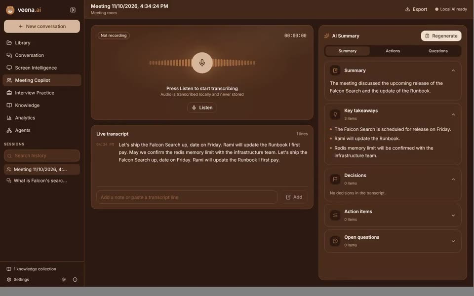
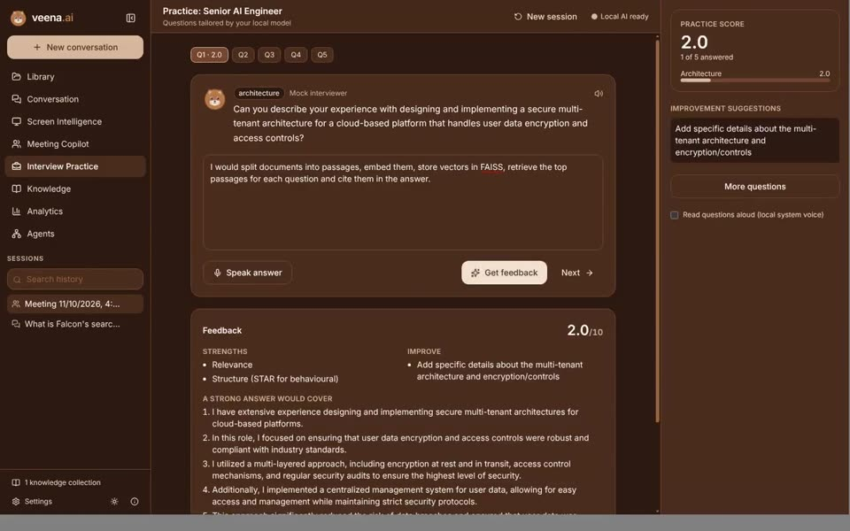
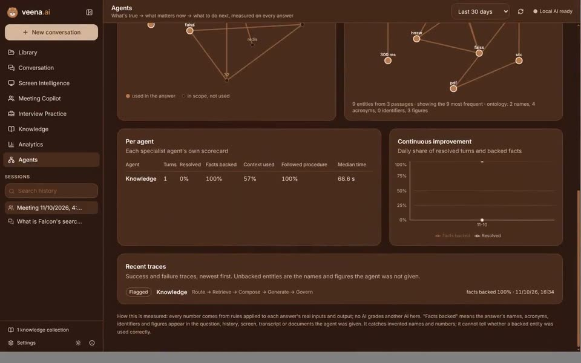

Ask anything.

Type or speak. Answers stream from an open model running on your computer, with code, tables and diagrams.
Local modelVoice inputStreaming
Features
Every clip below was recorded from the real app, with real local models and sample data. Model waits are shortened and long answers play faster.

Type or speak. Answers stream from an open model running on your computer, with code, tables and diagrams.

Choose one screen or window. VEENA reads it, masks detected secrets first, and explains code, errors or pages.
Wait shortened and answer sped up in the clip: about 3 minutes to start and 7 to finish on the 4-core, CPU-only recording machine.

Add PDFs, Word files, notes or spreadsheets. Every answer cites the passage it used, and says so when nothing matches.

Speech is transcribed on your computer, then summarised into decisions, action items and open questions.
Shown as recorded: the small 1.5B model listed an action item under key takeaways, and speech recognition misheard a name. Only record meetings you are authorised to capture.

Generated questions for eight roles, scored feedback on your answers and progress over time. For practice, not live interviews.

Each answer's names and figures are checked against what VEENA was given. Invented ones are flagged, and every turn is traced.
Small local models can be wrong. VEENA shows its sources and flags unbacked claims so you can judge every answer.